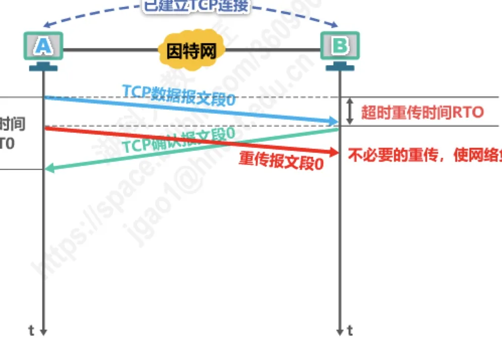
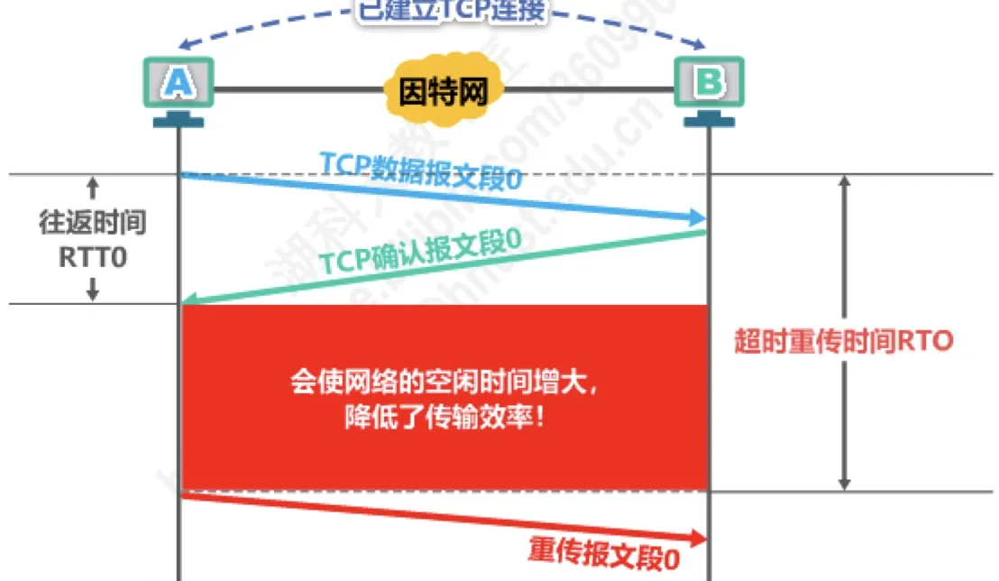
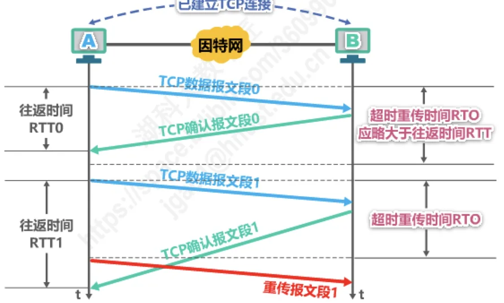
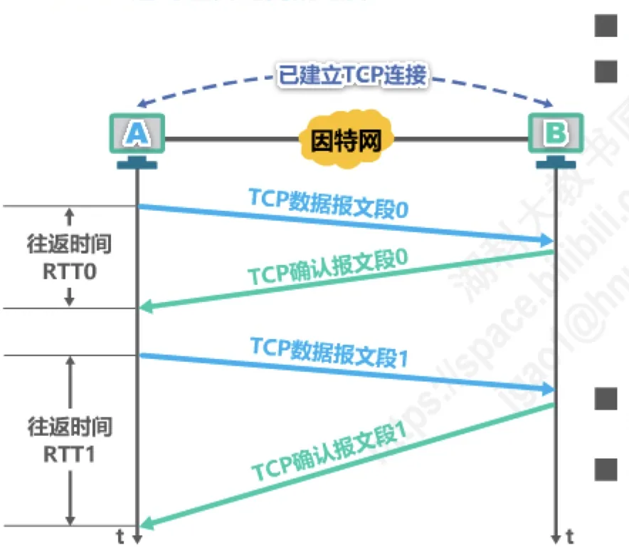
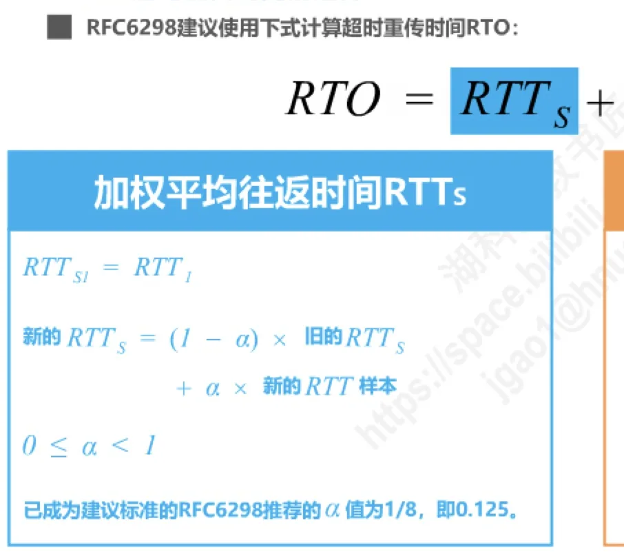
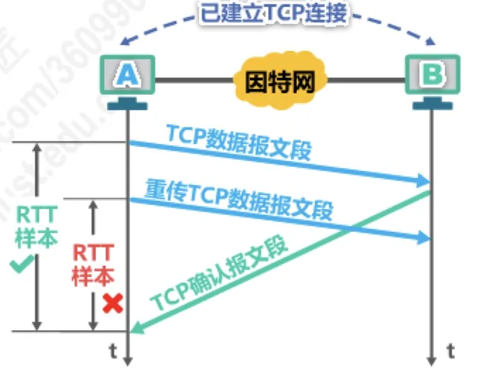
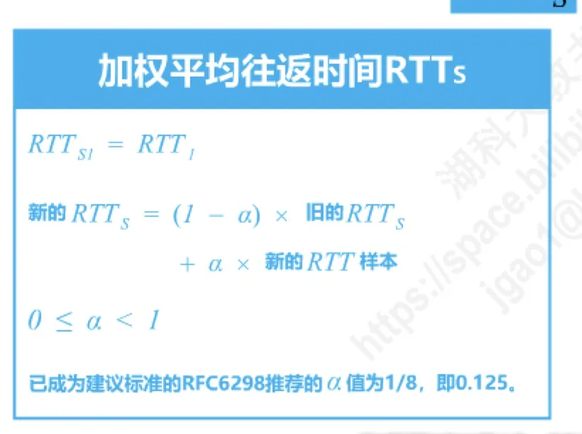

计算机通信与网络 · 第 5 章 运输层
5.6 TCP超时重传时间的选择
TCP 靠超时重传来兜底，而「超时」这个门槛定在哪里，直接决定 TCP 的性能：定得太小会把没丢的报文段重传一遍，定得太大又会让网络白白空等。本节讲的就是这个门槛——超时重传时间 RTO（Retransmission Time-Out）——如何根据往返时间 RTT 的测量值自适应地算出来，以及测量 RTT 时会遇到的两个麻烦：确认报文段到底确认的是谁，以及 Karn 算法如何修正。
1. 超时重传时间的选择是 TCP 最复杂的问题之一
发送方每发送一个报文段就会为该报文段设置一个重传计时器，计时器到期仍未收到确认，就重传该报文段。这个计时器的时长就是超时重传时间 RTO。它必须与网络的往返时间 RTT 相匹配，而网络时延又是随时变化的，所以原讲义把它列为 TCP 最复杂的问题之一。三个场景最能说明其中的难处。
情形一：RTO 太小。报文段其实并没有丢失，只是还在路上，发送方却已经等不及而重传，这就造成了不必要的重传，使网络负荷增大——本来就已经拥挤的网络又被塞进一份重复数据。

情形二：RTO 太大。发送方明明可以更早重传，却要白白等上很久，这段等待时间网络什么也没做，会使网络的空闲时间增大，降低了传输效率。

情形三：合适的选择。把两次测量的往返时间 RTT0、RTT1 与 RTO 放在一起看，结论就很清楚了：超时重传时间 RTO 应略大于往返时间 RTT。注意是「略大于」：大得太多会浪费时间，小得一点就会误判丢包。

问题在于，RTT 并不是一个固定值。同一个连接上，不同报文段的往返时间会随网络拥塞程度而波动，因此不能用一个静态的 RTO，也不能简单地拿某一次测量的结果当基准。
2. 加权平均往返时间 RTTs
第一个结论是：不能直接使用某次测量得到的 RTT 样本来计算超时重传时间 RTO。一次测量可能恰好碰上网络抖动，用它算出的 RTO 会非常不稳定。正确的做法是利用每次测量得到的 RTT 样本，计算加权平均往返时间 RTTs，它又被称为平滑往返时间。

RTTs 的更新方法是：第一个样本直接作为初始值，之后每测到一个新样本就与旧的 RTTs 做一次加权平均：
RTTs1 = RTT1
新的 RTTs = (1 - α) × 旧的 RTTs
+ α × 新的 RTT 样本
（0 ≤ α < 1）式中 α 是一个权重系数，它的取值决定了「新样本的话语权」：
- 若 α 很接近于 0，则新的 RTT 样本对 RTTs 影响不大；
- 若 α 很接近于 1，则新的 RTT 样本对 RTTs 的影响较大。
已成为建议标准的 RFC 6298 推荐 α 值为 1/8，即 0.125。用这种方法得出的加权平均往返时间 RTTs 就比测量出的 RTT 值更加平滑，用它作为基准，RTO 才不会随一次抖动而剧烈变化。显然，超时重传时间 RTO 应略大于加权平均往返时间 RTTs。那么「略大于」到底要大多少？这就要再引入一个描述波动程度的量。
3. 超时重传时间 RTO 的计算
RFC 6298 建议使用下式计算超时重传时间 RTO：
RTO = RTTs + 4 × RTTD其中的 RTTD 是 RTT 偏差的加权平均，它衡量的是各个 RTT 样本相对 RTTs 的偏离程度，也就是网络时延的抖动有多大。抖动越大，RTO 就应该比 RTTs 大得越多，这正是加上 4 倍 RTTD 的用意。
RTTD 同样用加权平均的方式更新：它的初始值取第一个 RTT 样本的一半，之后每得到一个样本就更新一次：
RTTD1 = RTT1 ÷ 2
新的 RTTD = (1 - β) × 旧的 RTTD
+ β × |RTTs - 新的 RTT 样本|
（0 ≤ β < 1）式中 β 是另一个权重系数。已成为建议标准的 RFC 6298 推荐的 β 值为 1/4，即 0.25。绝对值符号表示只看偏差的大小，不关心样本比 RTTs 偏大还是偏小。

把三项串起来看，这套算法的思路是：用 RTTs 描述「平均要等多久」，用 RTTD 描述「时间有多不稳定」，两者的加权和就是超时重传时间。网络平稳时 RTTD 小，RTO 就贴近 RTTs；网络抖动剧烈时 RTTD 大，RTO 就自动放宽，避免误判重传。
4. 往返时间 RTT 的测量为什么复杂
公式看着清楚，但要用起来还有一个前提：得先测准 RTT。麻烦恰恰出在这里——一旦发生超时重传，源主机就分不清收到的确认到底确认的是哪一个报文段（图 6）：
- 若源主机误将确认当作是对原报文段的确认，那么测出的 RTT 样本会包含重传前的等待时间，所计算出的 RTTs 和 RTO 就会偏大，降低了传输效率；
- 若源主机误将确认当作是对重传报文段的确认，那么测出的 RTT 样本会比真实往返时间小很多，所计算出的 RTTs 和 RTO 就会偏小，导致报文段没必要的重传，增大网络负荷。

两条路都不好走：偏大则网络空等，偏小则反复重传，而这又会带来新的 RTT 样本误判，形成恶性循环。所以必须有一条规则来回避这种「说不清」的样本。
5. Karn 算法及其修正
针对出现超时重传时无法测准往返时间 RTT 的问题，Karn 提出了一个算法：在计算加权平均往返时间 RTTs 时，只要报文段重传了，就不采用其往返时间 RTT 样本。也就是出现重传时，不重新计算 RTTs，进而超时重传时间 RTO 也不会重新计算。
这个规则干脆利落，却又引起了新的问题。设想出现这样的情况：报文段的时延突然增大了很多，并且之后很长一段时间都会保持这种时延。因此，在原来得出的重传时间内不会收到确认报文段，于是就重传报文段；但根据 Karn 算法，不考虑重传的报文段的往返时间样本，这样超时重传时间就无法更新——它永远停留在原来那个已经明显偏小的值上，导致报文段反复被重传。
因此要对 Karn 算法进行修正，方法是：报文段每重传一次，就把超时重传时间 RTO 增大一些。典型的做法是将新 RTO 的值取为旧 RTO 值的 2 倍，即
新的 RTO = 2 × 旧的 RTO这样一来，即使时延长期变大，RTO 也会随着一次次重传而倍增，最终「追上」新的时延水平，重传自然停止。
6. 一个完整的计算例子
把上面的公式放进一组实际数据里走一遍。原讲义给出的 RTT 样本依次为：RTT1 = 30、RTT2 = 26、RTT3 = 32、RTT4 = 24，第五个样本 RTT5 = 80 时发生了超时重传。取 α = 0.125、β = 0.25。
首先是初始值：RTTs1 = RTT1 = 30；RTTD1 = RTT1 ÷ 2 = 15；于是 RTO1 = RTTs1 + 4 × RTTD1 = 30 + 4 × 15 = 90。此后每个样本算一步：
RTTs2 = 0.875×30 + 0.125×26 = 29.5
RTTD2 = 0.75×15 + 0.25×4 = 12.25
RTO2 = 29.5 + 4×12.25 = 78.5
（其中 4 = |30 - 26|）照此递推，得到表 1。
| RTT 样本 | RTTs | RTTD | RTO |
|---|---|---|---|
| RTT1 = 30 | 30 | 15 | 90 |
| RTT2 = 26 | 29.5 | 12.25 | 78.5 |
| RTT3 = 32 | 29.8125 | 9.8125 | 69.0625 |
| RTT4 = 24 | 29.0859 | 8.8125 | 64.3359 |
| RTT5 = 80（超时重传） | 不计算（Karn 算法） | 不计算 | 128.6718（旧 RTO 的 2 倍） |
表格里有两点值得留意：
- 前四步中 RTTs 始终稳定在 29 上下，虽然 RTT 样本在 24～32 之间来回跳动，但加权平均把它们「熨平」了；而 RTTD 随着样本趋于稳定而逐步减小（15 → 12.25 → 9.8125 → 8.8125），RTO 也就从 90 一路收紧到 64.3359，网络利用效率随之提高。
- 第五个样本 80 已经超过了当时的 RTO4 = 64.3359，于是发生超时重传。按 Karn 算法，这个重传报文段的样本不参与计算；再按修正规则把 RTO 倍增，得到 RTO5 = 2 × 64.3359 = 128.6718。

本节小结
- 超时重传时间 RTO 的选择是 TCP 最复杂的问题之一：RTO 太小会造成不必要的重传、使网络负荷增大；RTO 太大则使网络的空闲时间增大、降低传输效率。合适的取值是略大于往返时间 RTT。
- 不能直接用某次测量的 RTT 样本，而要维护加权平均往返时间 RTTs（平滑往返时间）：初始 RTTs1 = RTT1，之后
新的 RTTs = (1 - α) × 旧的 RTTs + α × 新的 RTT 样本，0 ≤ α < 1；RFC 6298 推荐 α = 1/8（0.125）。 - RFC 6298 建议
RTO = RTTs + 4 × RTTD，其中 RTTD 是 RTT 偏差的加权平均：初始 RTTD1 = RTT1 ÷ 2，之后新的 RTTD = (1 - β) × 旧的 RTTD + β × |RTTs - 新的 RTT 样本|，0 ≤ β < 1；RFC 6298 推荐 β = 1/4（0.25）。RTTs 反映平均时延，RTTD 反映时延的抖动。 - 往返时间 RTT 的测量比较复杂：出现超时重传时无法判断确认到底对应原报文段还是重传报文段，误判会使 RTTs 与 RTO 偏大（降低效率）或偏小（造成不必要的重传）。
- Karn 算法规定：只要报文段重传了，就不采用其 RTT 样本。为避免时延长期增大时 RTO 无法更新、报文段被反复重传，还要修正：报文段每重传一次就把 RTO 增大一些，典型做法是
新 RTO = 2 × 旧 RTO。 - 本节算出的 RTO 是「何时重传」的门槛，而重传之后如何判断哪些数据已被接收、如何让接收方补齐空洞，就是下一节 5.7 TCP 可靠传输的实现要解决的问题。